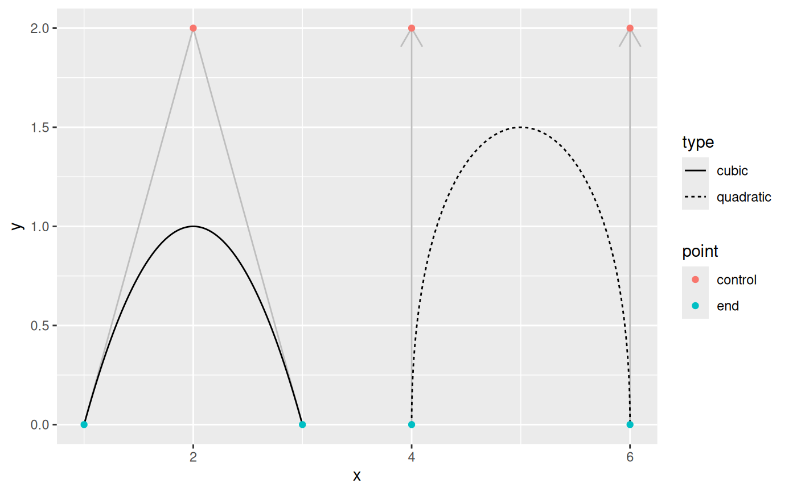
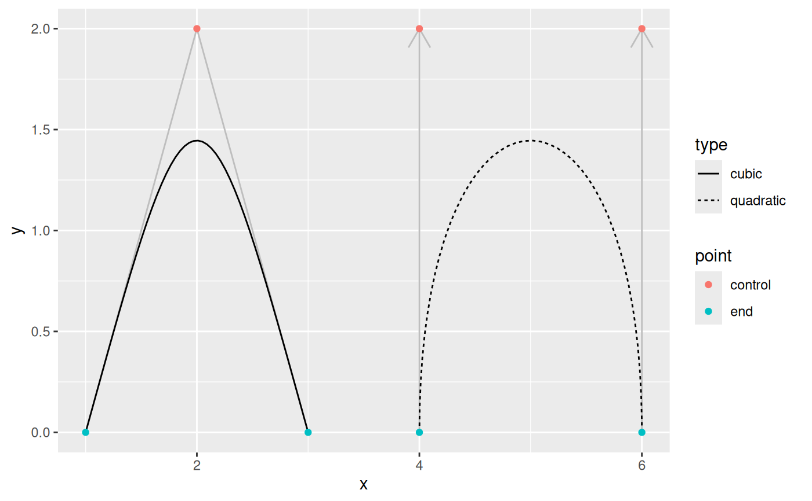
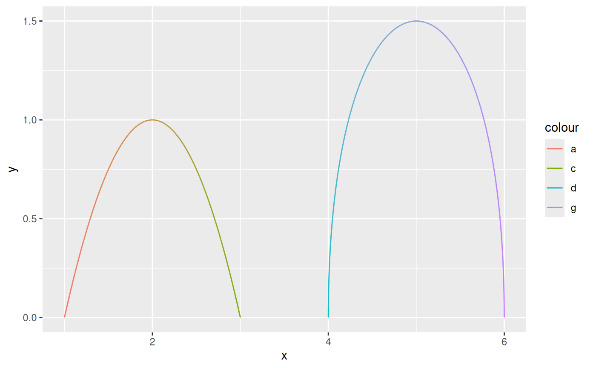

This set of geoms makes it possible to connect points creating either
quadratic or cubic beziers. bezier and bezier2 both work by calculating
points along the bezier and connecting these to draw the curve. bezier0
directly draws the bezier using bezierGrob. In line with the geom_link() and
geom_link2() differences geom_bezier creates the points, assign
an index to each interpolated point and repeat the aesthetics for the start
point, while geom_bezier2 interpolates the aesthetics between the start and
end points.
stat_bezier(
mapping = NULL,
data = NULL,
geom = "path",
position = "identity",
na.rm = FALSE,
show.legend = NA,
n = 100,
inherit.aes = TRUE,
...
)
geom_bezier(
mapping = NULL,
data = NULL,
stat = "bezier",
position = "identity",
arrow = NULL,
lineend = "butt",
na.rm = FALSE,
show.legend = NA,
inherit.aes = TRUE,
n = 100,
...
)
stat_bezier2(
mapping = NULL,
data = NULL,
geom = "path_interpolate",
position = "identity",
na.rm = FALSE,
show.legend = NA,
n = 100,
inherit.aes = TRUE,
...
)
geom_bezier2(
mapping = NULL,
data = NULL,
stat = "bezier2",
position = "identity",
arrow = NULL,
lineend = "butt",
na.rm = FALSE,
show.legend = NA,
inherit.aes = TRUE,
n = 100,
...
)
stat_bezier0(
mapping = NULL,
data = NULL,
geom = "bezier0",
position = "identity",
na.rm = FALSE,
show.legend = NA,
inherit.aes = TRUE,
...
)
geom_bezier0(
mapping = NULL,
data = NULL,
stat = "bezier0",
position = "identity",
arrow = NULL,
lineend = "butt",
na.rm = FALSE,
show.legend = NA,
inherit.aes = TRUE,
...
)Set of aesthetic mappings created by aes(). If specified and
inherit.aes = TRUE (the default), it is combined with the default mapping
at the top level of the plot. You must supply mapping if there is no plot
mapping.
The data to be displayed in this layer. There are three options:
If NULL, the default, the data is inherited from the plot
data as specified in the call to ggplot().
A data.frame, or other object, will override the plot
data. All objects will be fortified to produce a data frame. See
fortify() for which variables will be created.
A function will be called with a single argument,
the plot data. The return value must be a data.frame, and
will be used as the layer data. A function can be created
from a formula (e.g. ~ head(.x, 10)).
The geometric object to use to display the data, either as a
ggproto Geom subclass or as a string naming the geom stripped of the
geom_ prefix (e.g. "point" rather than "geom_point")
Position adjustment, either as a string naming the adjustment
(e.g. "jitter" to use position_jitter), or the result of a call to a
position adjustment function. Use the latter if you need to change the
settings of the adjustment.
If FALSE, the default, missing values are removed with
a warning. If TRUE, missing values are silently removed.
logical. Should this layer be included in the legends?
NA, the default, includes if any aesthetics are mapped.
FALSE never includes, and TRUE always includes.
It can also be a named logical vector to finely select the aesthetics to
display.
The number of points to create for each segment
If FALSE, overrides the default aesthetics,
rather than combining with them. This is most useful for helper functions
that define both data and aesthetics and shouldn't inherit behaviour from
the default plot specification, e.g. borders().
Other arguments passed on to layer(). These are
often aesthetics, used to set an aesthetic to a fixed value, like
colour = "red" or size = 3. They may also be parameters
to the paired geom/stat.
The statistical transformation to use on the data for this
layer, either as a ggproto Geom subclass or as a string naming the
stat stripped of the stat_ prefix (e.g. "count" rather than
"stat_count")
Arrow specification, as created by grid::arrow().
Line end style (round, butt, square).
Input data is understood as a sequence of data points the first being the
start point, then followed by one or two control points and then the end
point. More than 4 and less than 3 points per group will throw an error.
grid::bezierGrob() only takes cubic beziers so if three points are
supplied the middle one as duplicated. This, along with the fact that
grid::bezierGrob() estimates the curve using an x-spline means
that the curves produced by geom_bezier and geom_bezier2 deviates from those
produced by geom_bezier0. If you want true bezier paths use geom_bezier or
geom_bezier2.
geom_bezier, geom_bezier2 and geom_bezier0 understand the following aesthetics (required aesthetics are in bold):
x
y
color
linewidth
linetype
alpha
lineend
The interpolated point coordinates
The progression along the interpolation mapped between 0 and 1
beziers <- data.frame(
x = c(1, 2, 3, 4, 4, 6, 6),
y = c(0, 2, 0, 0, 2, 2, 0),
type = rep(c('cubic', 'quadratic'), c(3, 4)),
point = c('end', 'control', 'end', 'end', 'control', 'control', 'end'),
colour = letters[1:7]
)
help_lines <- data.frame(
x = c(1, 3, 4, 6),
xend = c(2, 2, 4, 6),
y = 0,
yend = 2
)
# See how control points affect the bezier
ggplot() +
geom_segment(aes(x = x, xend = xend, y = y, yend = yend),
data = help_lines,
arrow = arrow(length = unit(c(0, 0, 0.5, 0.5), 'cm')),
colour = 'grey') +
geom_bezier(aes(x = x, y = y, group = type, linetype = type),
data = beziers) +
geom_point(aes(x = x, y = y, colour = point),
data = beziers)

# geom_bezier0 is less exact
ggplot() +
geom_segment(aes(x = x, xend = xend, y = y, yend = yend),
data = help_lines,
arrow = arrow(length = unit(c(0, 0, 0.5, 0.5), 'cm')),
colour = 'grey') +
geom_bezier0(aes(x = x, y = y, group = type, linetype = type),
data = beziers) +
geom_point(aes(x = x, y = y, colour = point),
data = beziers)

# Use geom_bezier2 to interpolate between endpoint aesthetics
ggplot(beziers) +
geom_bezier2(aes(x = x, y = y, group = type, colour = colour))
